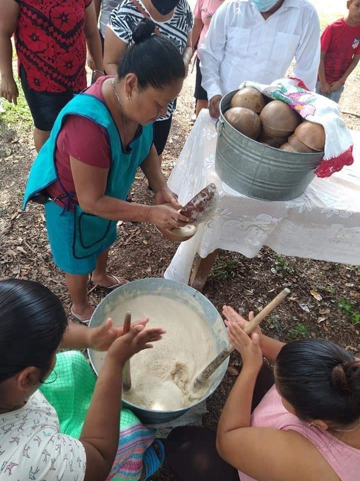
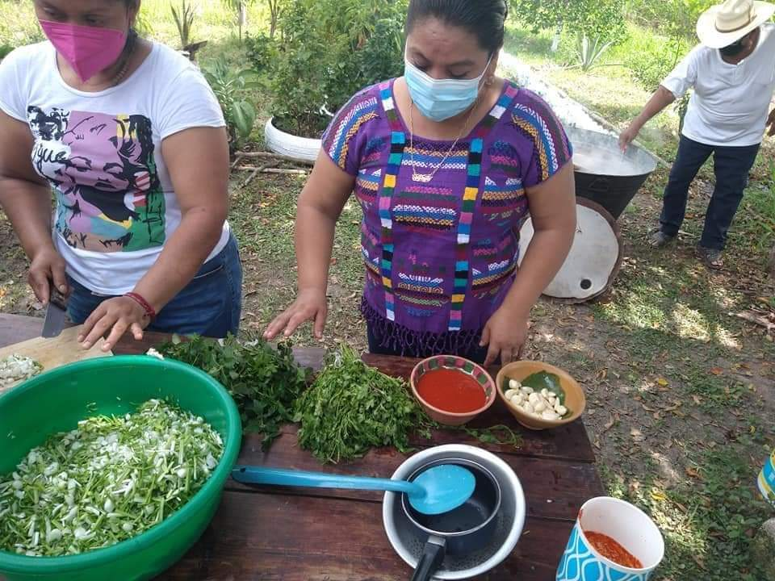
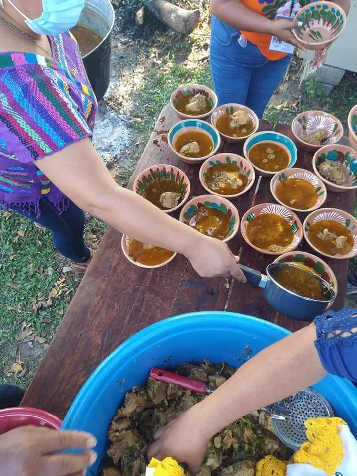

GASTRONOMÍA DE POBLADO TRES
Indígenas chinantecas del Poblado 3, municipio de Tres Valles, se basan en la gastromia con productos a base de Yuca en sus diferentes variedades.
A la primera muestra gastronómica con derivado Yuca con la finalidad de motivar e incentivar la creatividad artesanal en materia gastronómica de productos agrícolas, siendo la Yuca una de las bases de la alimentación de los pueblos originarios.
Productos hechos a base de Yuca como lo son:
Así el tradicional popo considerada como la bebida de los dioses y exquisito platillo de Caldo estilo chinanteco, una comida tradicional y típica de la chinantla oaxaqueña y que hoy se promueve en el territorio veracruzano.
|  |  |
 |
|